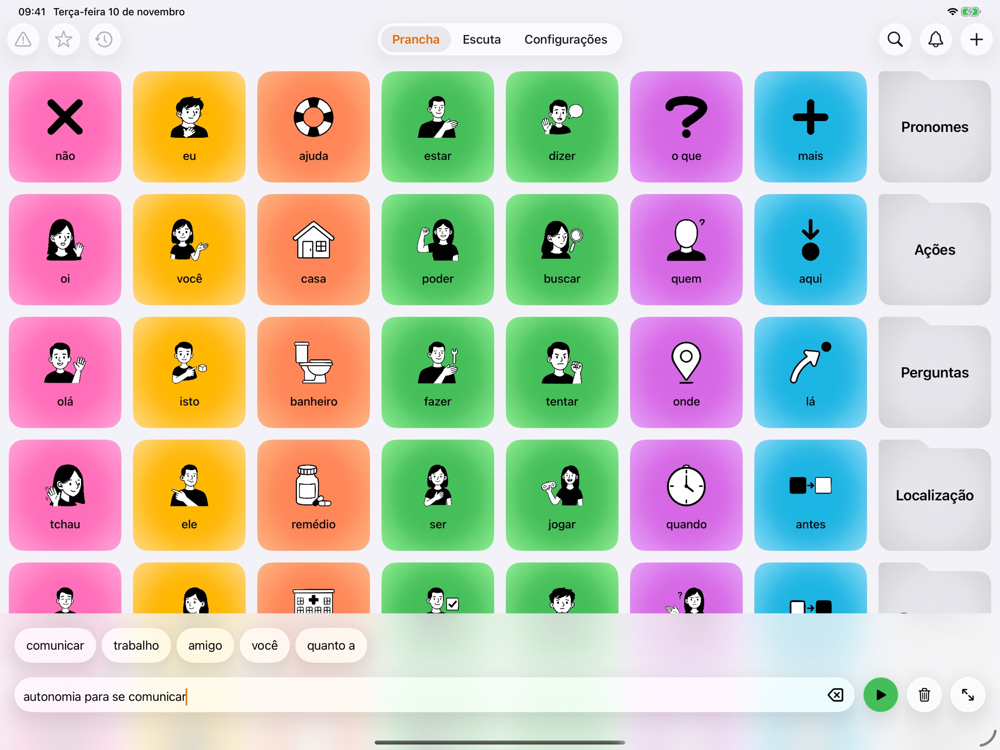
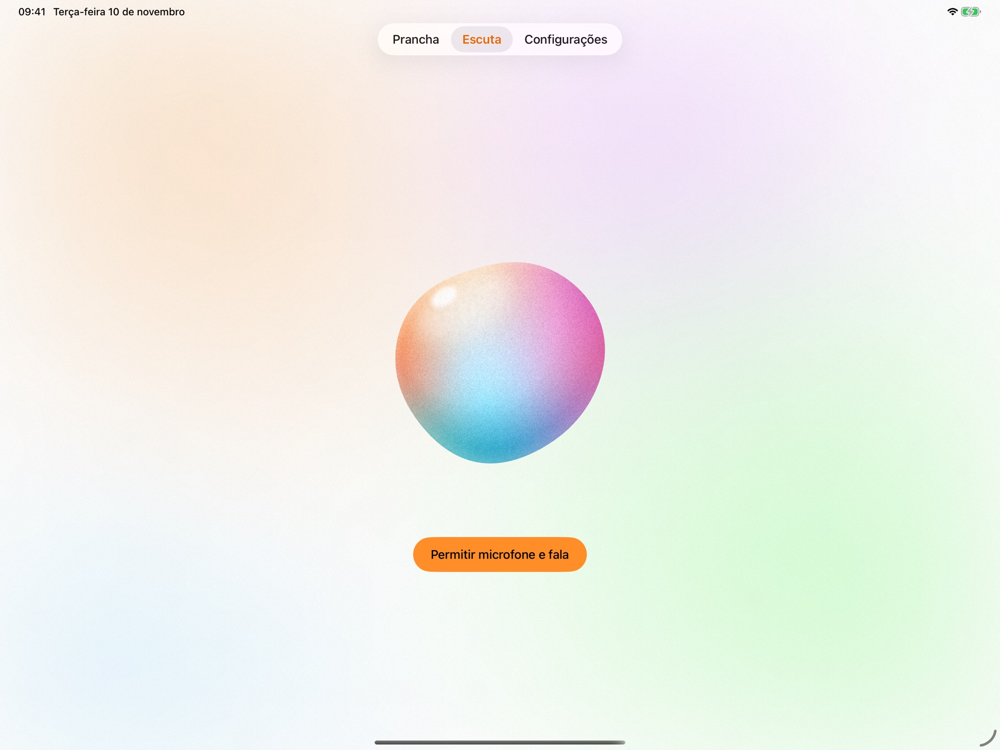

Comunicação do seu jeito
O YADDA é um app de Comunicação Aumentativa e Alternativa para iPad. Toque nos cards, monte a frase e o iPad fala por você.
Fale com a gente
Modo Escuta
O YADDA ouve a conversa e sugere palavras para você responder mais rápido.
A fala vira texto no próprio iPad. Nenhum áudio é gravado e a conversa é apagada quando a escuta termina.

Feito para o dia a dia
-
Cores por tipo de palavra
Pessoas, ações, lugares e perguntas têm cores próprias. Fica mais rápido achar o que você quer dizer.
-
Seu vocabulário
Crie cards e pastas com suas palavras e suas fotos, na ordem que fizer sentido para você.
-
Sugestões que aprendem com você
O app sugere a próxima palavra com base no que você costuma falar. Tudo aprendido no próprio iPad.
-
Voz do sistema
Escolha a voz, a velocidade e o tom. Funciona sem internet.
Seus dados ficam no seu iPad
Sem conta, sem servidor, sem rastreamento. O que você cria e fala no YADDA não sai do aparelho.